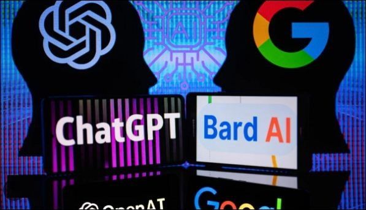
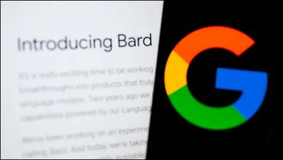
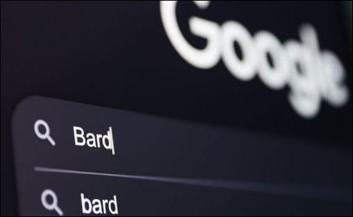

Will Google's (Bard-AI) OverTake ChatGPT?
In a recent game-changing move, Google has introduced its newest AI language model, Bard, with the audacious goal of outperforming the current industry leader, ChatGPT. This announcement has sparked a frenzy of interest and speculation about the future of AI and how it will transform various industries. In this article, we will delve into the background of these models, explore the unique features of Bard, and assess its potential impact on the dynamic and ever-changing landscape of AI.
Make sure to bookmark our page to stay up-to-date with the latest and most well-researched articles in the field of science and technology. Our team is dedicated to providing valuable insights into the exciting world of AI and other groundbreaking fields. Trust us to keep you informed on the forefront of technological innovation and help you understand the horizons of new discoveries.
Table of Content
- Introductory Part
- How Does a ChatBot AI Work?
- What is Google's Bard AI?
- Will Google's Bard AI Replace ChatGPT?
- Google's Important Step On AI Journey
- Pros of Bard AI Over ChatGPT
- Conclusion Part
ChatGPT and Copyright: What You Need To Know
Learn More: Click Here→
How Does a ChatBot AI Work?
ChatGPT is currently the most well-known AI language model, developed by OpenAI. It is a generative model that can produce human-like text based on a given prompt or context. It was released in 2018 and has since undergone several updates to improve its performance. ChatGPT has been used in various applications, such as chatbots, language translation, and content generation.
Language models like ChatGPT are trained on massive amounts of text data, using deep learning algorithms that can learn patterns and relationships in language. This allows the model to generate new text that is coherent and grammatically correct. Wanna Learn More About ChatGPT AI? Learn More→
What is Google's Bard AI?
Google's new AI language model, Bard, is the result of a collaboration between Google Research and the University of California, Berkeley. Bard was introduced in August 2021 and is described as a "large-scale generative language model that can produce diverse and creative natural language text." According to Google, Bard has the ability to generate more diverse and human-like text than other language models.
Bard's development employed a unique training technique called Switch Transformers, enabling the model to switch between multiple sub-models based on the text's context. This offers a more flexible and versatile output, superior to the fixed output of other language models. Bard was also trained on a larger dataset than ChatGPT, providing an edge in terms of output accuracy and diversity.
Which Programming Languages Were Used In ChatGPT AI?
Learn More: Click Here→
Will Google's Bard AI Replace ChatGPT ?
The introduction of Bard has the potential to disrupt the AI landscape and impact various industries that rely on language models. If Bard outperforms ChatGPT, it could lead to a shift in the market and cause other companies to develop similar models. This would create more competition and ultimately lead to more advanced language models.
However, it is important to note that the success of a language model depends on its ability to generalize to new data and its ability to adapt to different contexts. This means that while Bard may outperform ChatGPT in some areas, it may struggle in others. Additionally, the development of language models raises ethical concerns regarding the potential misuse of AI-generated text.
Google's Important Step On AI Journey
'Sundar Pichai', CEO of Google and Alphabet says,"It's a really exciting time to be working on these technologies as we translate deep research and breakthroughs into products that truly help people. That's the journey we've been on with large language models." Read More→
Google's bard seeks to combine the horizons of the world's knowledge with the power, intelligence and creativity of their large language models. It directly draws informations from the web to provide fresh, high-quality responses. They claim to combine external feedback with their own internal testing to make sure Bard's responses meet their high bar quality, safety and groundedness in real-world information.
Who Owns Content Generated By ChatGPT AI?
Learn More: Click Here→
Benefits of Bard AI Over ChatGPT
We're already aware about OpenAI's ChatGPT chatbot capable of producing texts like a human. Though it didn't have direct interconnection to the internet, it could generate wide range of feedbacks based on its stored datas. So, Google's Bard AI wants this limitation of ChatGPT AI to make its real strength. The following points showcase the benefits of using Bard AI over ChatGPT :
- Creative Language Generation: Google claims that Bard can produce more diverse and human-like text than other language models, which could improve the quality of output.
- Internet connectivity: Google's Bard AI has the ability to connect to the internet, allowing it to access and learn from the vast amount of information available online. This could potentially improve the accuracy and relevance of the generated text.
- RealTime Data Feeds: Bard's ability to access real-time data feeds can also improve its processing speeds. This makes it more suitable for real-time applications which help in research and marketing.
- Access to web content: This will help common users to access the desired output withing few seconds without searching the vast ecosystem of Google. This won't just help us reach correct information but also help us to access the result in no time.
- Innovation of New Ideas: With the use of an AI capable of addressing the horizons of Internet, one can use to create his/her own unique content. This will generate new ideas in the market and more ideas lead to more innovations. This is going to change the future of AI.
Conclusion
When we talk about AI linked to the internet, we are referring to the integration of artificial intelligence with the vast network of connected devices and data available on the internet. The combination of AI and the internet enables the development of intelligent systems that can analyze and interpret complex data sets, make predictions, and take actions based on that information.
Google's Bard AI can be helpful in the moments like synthesizing insights for questions where there's no one right answer, help us to distill complex information and multiple perspectives on Google Searches, access the internet in a different way. In order to provide better and valuable outcome what they are looking for, Google's AI is going to be a useful tool.
With the popularity of AI's like ChatGPT in AI industry, many big companies like Microsoft are planning to use the AI features in their new operating systems as well. This won't only help users seek their desired output easily but also saves a lot of time and efforts of people.
Top 5 ChatGPT Alternatives in 2023
Learn More: Click Here→